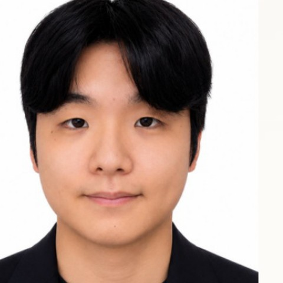
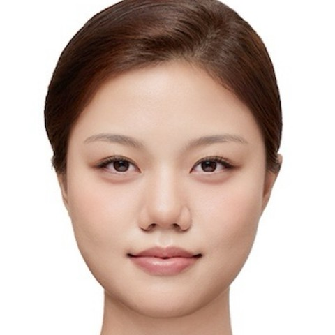
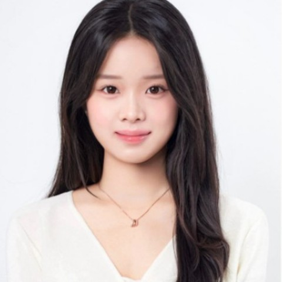
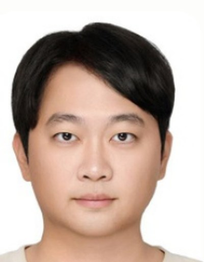

URP
Business Briefing
Provee.
Prove Your Thinking
"설명할 수 있는 지식만이 참된 지식이다."
우리는 고기를 잡아주지 않고
고기 잡는 법을 가르칩니다.
당신을 아는 AI 수학 튜터, Provee.
✦
01
회사 정의 · Who Are We?
Provee는 수학이란 학문에 있어 사람이 가진 물리적 한계를 AI 기술 혁신으로 극복하고, '내 곁의' '나만의' '최고 수준'의 '진짜 교육'을 실현하는 수학교육기관입니다.
1 · 내 곁의
학원에 가지 않아도, 대치동에 가지 않아도 내 방에서 어디서든. 24시간 눈치 볼 필요 없이 질문하고 학습하는. 나를 기억하는 최고의 선생님을 인강보다, 그룹과외보다 저렴한 가격으로.
2 · 나만의
학생의 손글씨 풀이를 바탕으로 당신의 사고방식, 접근방식과 오답패턴을 기억하는 당신만의 선생님. 학생의 건강한 수학적 사고방식을 지지해주고, 오류와 수학적 잡초를 가지치기하는 정원사가 되어주려 합니다.
3 · 최고 수준의
최상의 손글씨 인식 기술(수식·그래프·도형). 학생의 이해수준에 최적인 설명법과 커리큘럼. 연령·문해력·끈기에 따라 해설의 부피와 밀도를 다르게 하는 정확하고 깔끔한 해설.
4 · 진짜 교육
고기를 주지 않고 고기를 잡게 하는 선생님. 배움의 기쁨을 알게 하는 성장의 보상체계와, 눈에 보이는 성장곡선.
02
문제 인식 ① · 답은 주는데, 학생을 보지는 못한다
학생들이 기대는 그 AI도 수학 앞에서는 답까지만입니다. 학생이 어떻게 풀었는지, 무엇을 알고 무엇을 모르는지는 보지 못합니다.
- 손글씨 · 손으로 푼 풀이를 매번 사진으로 찍어 올려야 하고, 수식에서 그래프와 도형으로 갈수록 인식 오류가 크게 늘어납니다. 2z를 22로 읽고도 확신에 찬 목소리로 설명합니다.
- 상호작용 · 답만 주고 내가 이해했는지 묻지 않습니다. 질문 한 줄에, 스크롤이 필요한 답변. 학생이 멈춰 서서 생각할 자리가 없습니다.
- 지속성 · 얼마 지나면 나를 잊어버립니다. 새 대화를 열면 맥락은 0에서 다시 시작. 잊혀진 정보를 추론으로 채우다 할루시네이션이 생깁니다.
그래서 학생은 이 순환에 갇힙니다. 문제와 내 풀이를 설명하고, 받아 적고, 다시 처음부터.
필연적으로 손으로 풀어야 하는 과목인데, 그 손을 읽는 학습 도구가 없습니다. 그리고 이 빈틈은 한국이 아니라 전 세계에 있습니다.
03
문제 인식 ② · AI에게 양도된 생각하는 수고
지금 전화번호를 몇 개나 외우고 계십니까? 20년 전에는 서른 개를 외웠습니다. 기억력이 나빠진 게 아니라, 선택 사항이 된 것입니다. 선택 사항이 된 것은 결국 사라집니다. 지금 같은 일이 다시 일어나고 있습니다. 이번에는 전화번호가 아니라, 생각입니다.
96점
브라운대 경제학 수업, 집에서 AI와 함께 본 시험의 평균
48점
같은 학생들이 강의실에서 종이로 본 시험의 평균
지금의 AI는 무게를 대신 들어주는 트레이너입니다. 벤치에 눕자마자 트레이너가 바벨을 대신 듭니다. 전부, 완벽한 자세로. 한 시간 뒤 땀 한 방울 없이 나오면서, 그것을 도움이라고 부릅니다.
좋은 트레이너는 거의 들 수 있는 무게를 고릅니다. 마지막 한 개에서 버티게 두고, 떨어뜨리기 직전에만 바를 받칩니다. 성장은 거기서 일어납니다. 생각이 강해지는 자리도 거기입니다.
학생들은 진짜 운동인 생각 그 자체를 AI에게 넘기고, 직접 들어올린 것처럼 96점을 들고 걸어 나갑니다. 도움이 사라지는 순간, 점수는 48점으로 무너집니다.
바람직한 어려움.
당장은 더디지만, 오래 남는 지식을 만드는 어려움.
스스로 기억을 꺼내고, 풀고, 틀리고, 다시 시도하는 과정. 학습 속도를 떨어뜨리는 것처럼 보이지만 실제로는 파지(retention)와 전이(transfer)를 높인다는 것이 반복 확인된 결과입니다. AI는 이 어려움을 '불필요한 불편'으로 분류하고 치워버렸습니다. 끈기가 자라던 자리가 바로 그곳이었습니다.
Robert A. Bjork & Elizabeth L. Bjork · University of California, Los Angeles
04
솔루션 · 과정을 읽는 기술, 설명하게 하는 교육
군 복무를 마치고 돌아왔을 때, 창립자 자신이 그 48점의 학생이었습니다. 매번 사진을 찍어 올려야 했고, 수식은 오독되고, 그래프와 도형은 아예 읽지 못했습니다. 그래서 Provee를 직접 만들기 시작했습니다. 멈추는 세 곳을 다시 만들었습니다.
- 손글씨 · 학생이 그린 그래프와 도형을 정확히 읽고 구현합니다. 문제와 노트가 한 화면에 있어, 사진 찍어 올리고 기다릴 필요가 없습니다. 쌍곡선·포물선·공간도형도 같은 엔진이 그리고, 초점·교점·절편은 전부 함수식에서 자동 계산합니다.
- 상호작용 · 답을 주는 대신 되묻고, 학생이 자기 언어로 설명할 수 있을 때에만 다음으로 갑니다.
- 지속성 · 학생의 손풀이 기록을 바탕으로 습관과 오답 패턴을 기억하고, 잘했을 때 격려하고 어긋났을 때 교정합니다.
언제 개입하고 언제 침묵할 것인가. 기능은 따라 만들 수 있지만 이 판단은 그렇지 않습니다. 이것이 우리의 교육이자, 해자의 맨 위층입니다.
고기를 잡아주지 않습니다.
고기를 잡는 법을 가르칩니다.
05
맞은 문제를 들여다보는 선생님
우리가 만드는, 가장 본질적이고 혁신적인 전환.
세상의 모든 평가는 '틀린 문제'만 약점으로 잡습니다. 맞은 문제는 동그라미 치고 그냥 지나갑니다.
그러나 진짜 물어야 할 것은 따로 있습니다. "이 문제, 어떻게 맞았는가?" 정답이라는 동그라미 뒤엔, 이런 균열이 숨어 있습니다.
- 그냥 찍어서 맞은 답
- 개념의 공백이 있는데도 맞은 답
- 논리(풀이 과정)의 비약이 있는데도 맞은 답
이것이 어려운 이유는 물리적 한계 때문입니다. 개인 과외 선생님조차 맞은 문제엔 동그라미만 칩니다. 모든 풀이 속을 일일이 들여다볼 시간도, 눈도 없으니까요.
그래서 우리는 여기에 겁니다. 손글씨 풀이 과정을 분석해, 맞은 문제 속에 숨은 균열까지 짚어내는 진단. 이것이 우리가 잡은 자리입니다.
그리고 이 모든 것이 공상이 아닙니다. 이미 만들어져 작동하는 제품 위에 있습니다. (손글씨 채점 · 즉시 피드백 · 수식/그래프 · 증명 모드 · OCR · 간격 반복)
06
우리의 해자 · 두 개의 층
한국에서만 생산되는 양질의 압도적인 손글씨 데이터로 파인튜닝된 자체 수학 모델과, 진짜 교육.
① 모델 · 대한민국의 데이터로 길러낸 자체 수학 모델
우리가 목표로 하는 것은 범용 모델을 빌려 쓰는 것이 아니라, 대한민국이라는 압도적인 양질의 데이터로 파인튜닝된 자체 수학 모델입니다.
한국 고교생은 하루 125분을 자습에 씁니다. 미국은 45분, 2.8배입니다. (2024 KOSIS 생활시간조사 / U.S. BLS American Time Use Survey에서 유도) 핵심은 양이 아니라 형태입니다. 사진이 아니라 획·지움·멈춤을 벡터로 잡습니다. 최종 답은 이미 상품화됐지만, 학생이 밟은 경로는 아직 아무도 소유하지 않았습니다. 이 데이터 위에서만 나오는 원가와 정확도가 범용 API를 부르는 회사와 우리를 가릅니다.
현재 상태 · 데이터는 쌓이는 중, 모델은 학습 전입니다. 완료가 아니라 목표입니다.
② 교육 · 언제 개입하고 언제 침묵할 것인가 (설계·운영 중)
기술도, 데이터 자체도 아닙니다. 데이터에서 배우는 것, 곧 인간이 수학을 배우는 방식입니다. 어디서 멈추고, 무엇을 지우고, 언제 전략을 바꾸는지. 그래서 교육의 근본 질문을 연구할 수 있습니다. AI 선생님은 언제 개입하고, 언제 침묵해야 하는가.
AI가 발전할수록 중요한 질문은 AI가 학생에게 무엇을 해줄 수 있느냐가 아니라, 학생이 스스로 계속해야 하는 것이 무엇이냐입니다. 장기 해자는 더 나은 답을 만드는 것이 아니라, 인간의 수학 학습에 대한 가장 깊은 이해를 쌓아 생각을 학생 곁에 남겨두는 것입니다.
그리고 기술만으로 해자가 되지는 않는다고 봅니다. 결국 쓰고 싶은 하나의 앱이자 문화가 되어야 합니다.
07
하나의 기술, 세 개의 문
같은 손글씨·채점 엔진으로 세 시장을 엽니다. 2026년 7월, 우리는 글로벌(미국) 우선으로 방향을 바꿨습니다. 미국용으로 준비하는 것이 곧 전 세계용으로 준비하는 것이기 때문입니다.
B2C · 한국
중·고등학생 월 구독. 파인튜닝을 위한 클린 데이터의 원천이자 국내 기저 매출.
B2C · 글로벌
전 세계 수학 학습자. 우리의 메인 타깃층. 수학은 말보다 기호로 통해서, 쓰던 엔진을 그대로 씁니다.
B2G · 미군
주둔지·파병지 어디서든 같은 품질의 수학 교육이 필요한 미군과 그 가족. 미국 진출의 교두보.
왜 미군인가 · 학비 때문에 입대하고, 대학으로 돌아간다
미국에서 군 복무는
대학 학비를 마련하는 길입니다. Post-9/11 GI Bill은
36개월(3년) 복무를 채우면 공립대 주(州) 내 등록금
전액과 월 주거비, 연 1,000달러의 교재비까지 지원합니다. 그래서 많은 장병이 전역과 함께 학교로 돌아갑니다.
그런데 돌아가는 길에
시험이 놓여 있고, 그 관문은 대부분 수학입니다.
- 대학 배치고사ACCUPLACER 등 · 못 넘으면 학점 없는 보충수학부터
- CLEP · DSST통과하면 학점 인정 · 응시료는 국방부(DANTES)가 부담
- AFCT복무 중 ASVAB 재응시 · 보직 변경과 진급의 조건
- SAT · ACT진학 준비 · DANTES 지원
수학을 다시 잡아야 하는 이유가 진로와 돈에 직접 걸려 있는 사람들입니다.
이미 있는 것, 그리고 아직 못 찾은 것
이 수요는 이미 인정받고 있어서, 국방부가 돈을 들여 학습 지원을 제공합니다. Peterson's의 온라인 학습과정(OASC)이 무료로 열려 있고, Tutor.com은 군인 가족에게 24시간 사람 튜터를 무료로 붙여 줍니다.
다만 저희가 조사한 범위에서 이들은 영상 강의와 문제 풀이, 그리고 사람 튜터입니다. 장병이 직접 손으로 쓴 풀이를 읽고 어디서 어긋났는지 짚어 주는 도구는 이 통로에서 확인하지 못했습니다. 게다가 불규칙한 근무와 파병 일정에서는 사람 튜터와 시간을 맞추는 일 자체가 부담입니다.
우리가 들어갈 자리가 여기입니다. 손글씨를 읽는 기술은 시차도 근무표도 묻지 않습니다.
미군 시장에 우리가 가진 것 · 이미 놓인 다리
창립자 김수민은 미 육군 411th Contracting Support Brigade에서 근무하며 사령관 비서를 맡았습니다. 계약 담당자들과 쌓은 친분과, 그들이 실제로 어떻게 일하는지에 대한 경험이 남아 있습니다. 대부분의 스타트업이 몇 년을 들여 겨우 문을 두드리는 자리에서, 우리는 사람을 알고 절차를 압니다.
다만 이 관계는 사용자 인터뷰와 공개된 절차를 이해하는 데에만 씁니다. 비공개 조달정보나 특혜를 구하지 않는다는 것을 문서로 정해 두었습니다.
2차 베타(목회자·선교사 자녀 200명)는 10월 초 개시, 법인 설립은 11월 전, 정식 출시는 11월이 목표입니다. 미국 진출 준비가 함께 굴러가고 있습니다.
지금, 시대의 바람
B2G, 시대가 등을 밀어주는 시장
미군은 세계 어디에 주둔하든 같은 품질의 교육을 가족에게 약속해야 하는 조직입니다. 학원도 과외도 닿지 않는 주둔지에서, 화면 위 손글씨로 완결되는 우리 수업은 그 약속을 지키는 도구가 됩니다.
국내에서도 정부와 교육청이 AI 교육과 교육격차 해소에 대규모 예산을 쏟고 있습니다. 풀이 과정까지 들여다보며 약점을 메우는 기술은, 공공이 정확히 찾던 답입니다.
B2G의 문이, 안팎에서 함께 열리고 있습니다.
08
이게 얼마나 큰가 · 실제 사례
우리만의 주장이 아닙니다. 같은 시장에서 이미 천문학적 가치가 증명됐습니다.
Photomath
수학 문제를 인식해 풀이를 보여주는 앱. 구글이 인수(2022~23), 추정 3,300억~7,500억원.
콴다 / 매스프레소
한국 수학 AI 검색 앱. 누적 투자 약 1,530억원, 유니콘 근접, 50개국 서비스.
시장이 이미 수천억~조 단위로 증명된 겁니다. 그런데 우리는, 이들과 방향이 정반대입니다.
Photomath · 콴다문제를 대신 풀어 답과 풀이를 보여준다. 학생은 받아 본다.
Provee학생이 직접 손으로 푼다. 그 손글씨 사고 과정을 분석하고, 맞은 문제 속 균열까지 짚어 이끈다.
답을 주느냐, 답하게 만드느냐.
세계로 눈을 돌리면 같은 비전을 추구하는 회사들이 보입니다. 같은 비전을 향해 오는 경쟁자는 위협이 아니라 검증입니다. 그래서 우리는 기능 목록이 아니라 해자를 따로 적었습니다.
09
검증 결과
사전 수요 설문 105명 (2026년 7월, 온라인)
61%
"Provee가 사라지면 매우 실망스럽다"는 응답. 프로덕트 마켓 핏의 기준선(Sean Ellis)인 40%를 웃도는 수치입니다.
MVP 실사용 18명 (대구 화원고 2학년 포함, 2026년 7월)
104원
문제당 실측 API 원가 (표본 4명 구간)
대구 화원고등학교 2학년"수학이 어려워 낮은 점수를 받을 때가 많았는데, 정작 내 문제점이 무엇인지 몰라 늘 답답했다. Provee를 쓰면서, 처음으로 그게 나아질 수 있겠다는 희망을 봤다."
고등학교 1학년"내가 모르는걸 단지 설명만으로 알려주기 보단 내가 풀이를 적는 과정을 함께 보면서 잘못된 점을 짚어주고 상세하게 설명해주면 좋을것 같다."
10
비즈니스 모델 · 배우는 사람과 내는 사람
모두가 고교 사교육 시장의 총지출만 볼 때, 저희는 누가 남고, 누가 떠나는지를 봤습니다. 2025년 수학 사교육 참여자는 6만 3천 명 감소했지만, 남은 학생의 월평균 지출은 39만 1천 원까지 증가했습니다. 시장은 더 높은 비용도 감당하는 고구매력 수요와, 가격에 민감해 이탈하는 저구매력 수요로 양극화되고 있습니다.
그래서 한 제품으로 양쪽을 모두 가져갑니다. 같은 앱이지만, 두 수요에게 서로 다른 자리를 차지합니다.
구매력 있는 층에게 · 프리미엄 보완재
학원과 과외를 그만두게 하지 않습니다. 수업과 수업 사이, 혼자 푸는 시간을 메우는 자리로 들어갑니다. 월 39만 원을 쓰는 가정에 9만 9천 원은 끊을 이유가 없는 금액입니다.
이탈한 수요에게 · 메인 튜터
가격 때문에 학원을 떠난 학생에게는 보완재가 아니라 메인 튜터입니다. 과외의 개인화를 인강보다 싼 값에 받습니다. 떠난 수요가 시장으로 돌아오는 문이 여기입니다.
결제 구조는 돈을 내는 사람이 누구냐에 따라 두 갈래입니다.
고등학생 · 월 구독 99,000원
쓰는 사람은 학생, 내는 사람은 학부모. 14만 원대 인강보다 낮은 가격에 과외 수준의 개인화. 매달 이어지는 안정적인 반복 매출.
대학생 · 시험기간 패스
쓰는 사람과 내는 사람이 같으니, 정기구독이 아니라
필요한 기간만 삽니다. 시험 앞둔 절박함에 이름을 붙였습니다.
- 중간고사 패스3주 · 49,000원
- 일주일의 전사7일 · 29,000원
- 3일의 전사3일 · 19,000원
- 24시간의 전사24시간 · 9,900원
강점은 하나입니다. 개인화된 교육의 합리적인 가격. 개인화에는 반드시 가격 상승이 따른다는 공식을 깹니다.
단위경제·원가 구조·지분과 보상 등 더 깊은 숫자는 1:1에서 직접 말씀드리겠습니다.
11
마일스톤 · Milestone
- 10월 초 · 2차 베타 개시. 목회자 자녀 100명과 전 세계 선교사 자녀 100명, 모두 200명에게 앱을 엽니다. 목회자 자녀는 우리가 나고 자란 공동체라 가장 먼저 닿을 수 있고, 선교사 자녀는 여러 나라에 흩어져 있어 첫날부터 해외에서 쓰이는 셈이 됩니다. 여기서 확인하려는 것은 하나입니다. 학생이 시키지 않아도 다음 날 다시 앱을 여는가.
- 11월 전 · 법인 설립 목표. 글로벌 투자와 미국 진출을 감당할 구조로 준비하고 있습니다.
- 11월 · 정식 출시 목표. 베타에서 확인한 것을 반영해 제품을 정식으로 엽니다.
- 2027 · SAT · 미국 진출. 같은 엔진, 영어 커리큘럼. 학생이 수학을 손으로 쓰는 건 어디서나 같습니다. 여기서 확인하려는 것은 한국 학생에게 통한 방식이 미국 학생에게도 그대로 통하는가입니다.
12
팀 · 이 문제를 직접 겪은 사람들
LLM 수학 추론을 연구하는 NeurIPS 2025 공동 제1저자가 기술 자문으로 함께합니다.
김수민
CEO · 창립자
서강대학교 경제학 · 공공인재학
- 교육 현장대형 수학학원 강사 · 한미 중고생 과외 · 청소년 멘토링, 약 5년
- 채점 로직 설계계량경제학 · 수리통계학 기반
- AI Product Builder자신을 첫 사용자로 MVP 전 과정을 직접 구현·고도화
- AI 연구서강대 AI금융 'Hermes Agent' 연구·설계
최지민
CTO
인하대학교 경제학 · 소프트웨어융합공학
- B2B 개발중기부 예비창업패키지 선정 서비스 프론트엔드
- SaaS 개발TIPS 선정 스타트업 버티컬 SaaS 엔지니어
- B2C AI 리드AI 서비스 개발 총괄 · 모두의창업 및 AI Rookie 진출
- AI 연구AI 3D 생성 연구 제1저자 · KSCI 우수논문상

손정범
Head of Backend & Data
홍익대학교 컴퓨터공학
- 산학협력365mc병원 캐뉼라 팁 좌표 추적기 개발
- AI 연구U-Net + ViViT 기반 이상 탐지 모델 설계·구현
- 교육 현장해외 거주 초중고생 과외 6개월

김은우
해외 마케팅 총괄
이화여자대학교 융합전자반도체공학부
- 글로벌 역량영국·베트남 10년 거주 · 영국 중등교육 전 과정 · 영어 네이티브
- SNS 성과이화여대 스키팀 릴스 10편 누적 52만 회
- 글로벌 브랜드에센허브 글로벌 앰버서더 · 릴스 기획·제작·운영
- 수학 교육영국 현지 멘토링 1년 6개월 · UKMT Gold 3회 · 교내 1위

윤세빈
Head of Brand Strategy
서강대학교 경영학
- 국제 교류치앙마이대학교(CMU) 교류 프로그램 학생대표
- 미디어 콘텐츠서강대 학생기자 · 누적 조회수 700만
- 리더십·기획몽골 교육봉사 총괄·기획팀장
- 교육 멘토링입학처 고교 멘토링 · 한국장학재단 수학 멘토링
- 학업 성취Dean's List 2회 · 서강대학교 총장상
- 금융 리서치서강대학교 금융투자학회 SRS 수료
- 리서치 성과5개 대학 연합 KEYSS 리서치 대회 우승
- 교육 현장중·고등학생 수학·영어 과외 2년

AI Technical Advisor
김근태
한양대학교 컴퓨터공학 박사과정 · LLM 수학 추론 연구
NeurIPS 2025 공동 제1저자
AI·ML 세계 최고 권위 학회 · 2025 채택률 24.52%
그리고 아직 비어 있는 자리가 둘 있습니다. 누군가를 밀어내고 만든 자리가 아니라, 아무나 앉히지 않으려고 비워 둔 자리입니다.
수학 · 학습과학
문제 제작, 커리큘럼, 그리고 언제 개입할지의 판단 기준. 이 자리가 채워지는 순간 우리는 파운데이션 모델에 기대는 회사에서, 스스로 수학적 기준을 세우는 회사가 됩니다.
디자인 · UI
앱의 첫 화면부터 글꼴 하나, 색 하나, 여백 하나까지. 수학 앞에서 작아진 채로 앱을 켠 학생이 처음 마주하는 화면을 책임집니다. 사용자의 눈과 피부와 영혼에 직접 닿는 자리입니다.
단위경제·요금제·지분과 보상 등 구체적 숫자는 이 문서에 담지 않았습니다. 정직한 숫자로 1:1에서 직접 말씀드리겠습니다.
✦
왜 이 일을 하는가
우리는 단순히 이윤을 추구하는 기업이 아닙니다. 이윤 추구는 크리스천 기업에게도 정당한 목표입니다. 다만 그 이윤의 '목적'이 다를 뿐입니다.
① 각자의 도약
20대에 창업하며 얻는 경험은 무엇과도 바꿀 수 없는 금입니다. 맨땅에 헤딩하며 배우는 실무와 조직문화, 그리고 정당한 경제적 결실.
② 손 내미는 기술
공부에 어려움을 겪는 학생, 세심한 도움이 필요한 이들에게 손 내미는 기술. 그들이 다시 일어나 배움의 기쁨을 알게 되기를.
③ 복음을 수출하다
교육의 기회 자체가 선물이 되는 곳에 우리의 도구를 보냅니다. 언젠가 복음까지 가르치는 도구로, 다시 오실 주님의 길을 예비하는 기업이 되기를.
"My grace is sufficient for you, for my power is made perfect in weakness."
"내 은혜가 네게 족하도다 이는 내 능력이 약한 데서 온전하여짐이라"
2 Corinthians 12:9 · 고린도후서 12장 9절
✦
본 자료는 초대받은 분을 위한 내부 브리핑입니다. 비교사례·시장 수치는 공개된 추정이며 미래 성과를 보장하지 않습니다.
외부 공유를 삼가 주세요. · URP Corporation